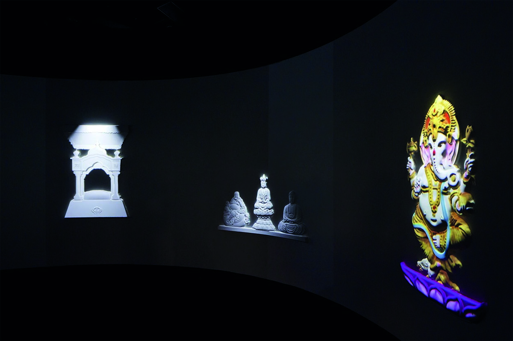
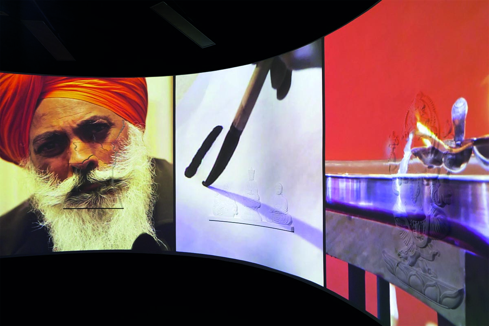
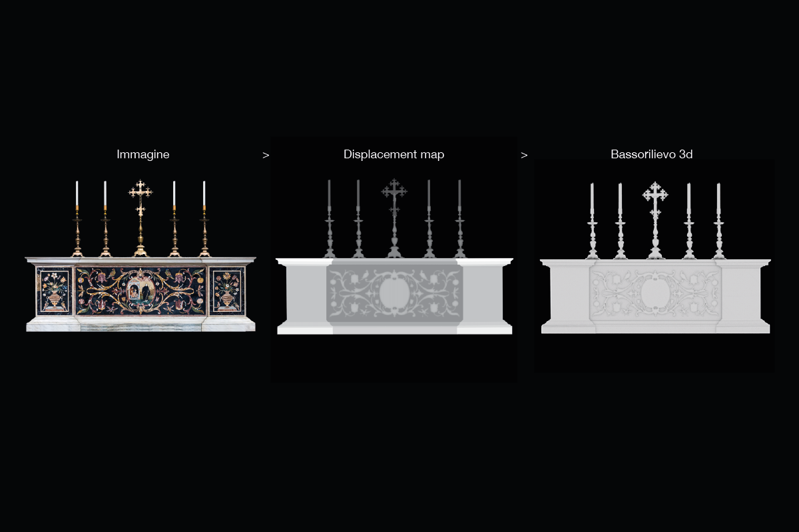

M9 - Pop culture museum
2017 – 2018
M9 is an interactive museum in Mestre about the italian pop culture across the '20th century. While working in Dotdotdot i've been part of the project since the beginning, wich started as a call from Polymnia association to some of the best interaction design studios in Italy. I've been part of the concept and visual design team of the whole 2 sections won by Dotdotdot, and curated three installations designing the aesthetic and user experience, coordinating the content creators and developing the software. These three installations are about Sports, religions and universities in Italy
Italian's sports

The exhibit consist in a structure with rollers where a PVC with printed a newspaper can roll over. A screen is fixed on top of the structure where a digital copy of the newspaper scroll coordinated with its physical version. This merging of physical and digital layers is made possible by a custom rotary encoder developed by my collegue, here a test of the first prototype:
I've developed the interface in VVVV, where the digital copy of the newspaper is scrolled and digital content like video, animations, carousels are displayed.
Italian's religions
The installation concerning religion is a circular room projected at 360 degrees that evokes the sacredness of places of worship. On the wall are integrated with white bas-reliefs representing the religions most present in the Italian territory during the 20th century. Through sensors that detect the presence of visitors near a religious symbol, the projection is activated and colours the bas-relief and reveals a video provided by the curator Alberto Melloni, an expert in religions. I've supervised the software development coordinated the team and designed the user experience and the 3d models of the bas-reliefs.

As a starting point I've developed the user experience of the installation and a prototype in scale of the experience with a first version of the software developed by Nicolò Cervello.
A challenge of this project was the creation of the 3d files of the bas-reliefs from photographs. To succeed in this I created the displacement map starting from the images and then converted them with mesh modeling software into three-dimensional files.
